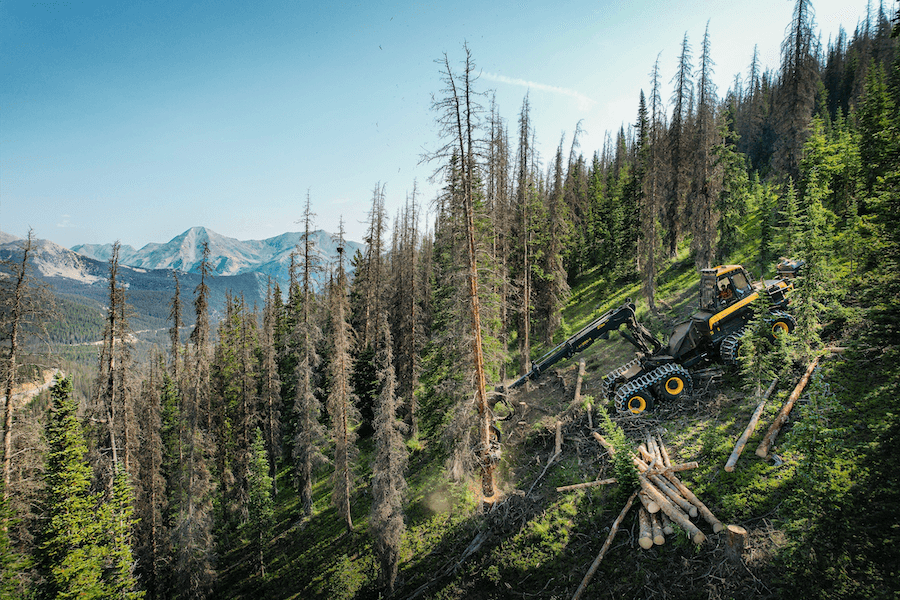

Interactive VR forest simulation system
Producer / Lead engineer · immersive forestry visualization

Description
This project explored an interactive VR simulation system tied to smart forestry, restoration, and the mass timber pipeline. I contributed in a producer and lead engineering role, helping shape both the technical direction and the execution path for an immersive educational and visualization experience.
RoleProducer / Lead engineer
PlatformVR
TechInteractive visualization · Real-time 3D · VR systems
LinksProject page